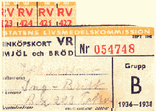
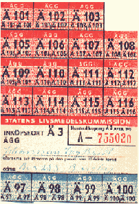

Ockelbo under andra
världskriget
av Anna Stensson
Inledning:
Mitt val med ett projektarbete om Ockelbo och speciellt
avgränsningen till
Andra Världskriget hade många anledningar. Den främsta var att jag
är
uppväxt i Ockelbo och känner väl till bygden som den ser ut idag. Därför
intresserades jag av hur det såg ut i Ockelbo innan min tid.
Men jag var tvungen att göra en avgränsning, därav
till Andra Världskriget.
Dels på grund av att kriget pågick runt Sveriges gränser och
för att kriget
satt spår än in på våra dagar. Men även därför att det finns
människor i
Ockelbo som kan berätta om händelser som utspelade under just denna
tidsepok.
Hela världen blev påverkad av detta krig men hur såg
det ut för en liten
enskild ort mitt i vårt land? Den frågan är den som kommer att
genomsyra
arbetet från första stycket till sista punkten. Enbart för att den är så
intressant i sig själv.
De övriga frågorna som intresserade mig var hur Ockelbo
kommun såg ut
och fungerade. Gjorde Ockelboborna någon insats för krigets offer?
Tillsist
undrade jag om kriget medförde något positivt till samhället? Dessa frågor
har jag gjort mitt bästa för att kunna besvara.
Min avgränsning till Ockelbo under Andra Världskriget
har visat sig varit så
gott som blankskriven i det nuvarande skrivna materialen. Det
finns inte en
bok eller häfte som berättar om Ockelbos samhälle under vare sig Första
eller
Andra Världskriget.
Det finns i alla fall en bok som berör Ockelbo men på
ett annat sätt än min idé.
Det är den s.k. Ockelboboken och den omfattar historien om
bygden från istid
fram till idag. Många varierande kapitel om en del områden i
samhället som är
skrivna på ett bra sätt. Men det är ingenting tryckt om
situationerna under
krigen. Därför har det varit en extra tuff utmaning till att söka
efter material
som passade mitt arbete.
Min bakgrundssökning har bl.a. baserats på artiklar om
Ockelbo i Arbetarbladet
från tiden 1939-1945 och någon enstaka tidningar från Gefle Dagbad. Men
även på intervjuer från fem-sex stycken människor som levde under min
avgränsningstid.
Tack vare intervjuerna kommer en historisk bild fram på
ett tydligt sätt. Det
är alltså ingen brist på användbart material. Det enda som
fattas är att det
blir nedskrivet innan det är försent.
Den enda nackdelen med intervjuer är de olika
missuppfattningar som kan
uppstå mellan talaren och lyssnaren. Man uppfattar saker och
ting på olika
sätt. Därför reserverar jag mig för en del enstaka misstag.
Till sist vill jag tillägga att jag vill med detta
arbete ge en grundläggande bild
av hur Ockelbo såg ut under Andra Världskriget.
Sammanfattningsvis skulle
man kunna betrakta arbetet som en sammanställning av de
oskrivna
dokumenten från Ockelbo.
De stora förlusterna
Under kriget skulle mycket komma att förändras. Den
första märkbara
förändringen var vardagens små rutiner. Allting skulle komma att
ändras.
Denna förändring var mest tydlig på landsbygden än
inne i staden.1 Självklart
skedde det förändringar även inom Gävles
gränser. Män från städerna blev,
som män från landet, inkallade till kriget.
Kommunen Ockelbo var tidigare mycket mer beroende av
jordbruket än vad
man är i dag. Under kriget var så gott som alla familjer bönder.
Antagligen
levde man av sin självägda jord eller så arrenderade
man jorden av
Kopparfors.2 De familjer som arrenderade jord och i många fall
även en bit
skog övertog ansvaret för markens skötsel. Kopparfors antog att
arrendatorerna om hösten och vintern skulle arbeta för dem. Om hösten
ögg man och på
vintern körde man i väg timret.
Kriget medförde ett stort antal inkallelser av
krigsdugliga män. Detta ledde
till att halva arbetskraften på gårdarna försvann. Men
detta löstes i en del
fall med hjälp från bl.a. Hälsingland.2 Från
grannlandskapet kom det
arbetsvilliga människor.
I Ockelbo förekom det under kriget mer eller mindre
volontärutfört arbete på
gårdar. Det var antagligen frivilliga eller tvingade ungdomar
som hjälpte till
med det tunga arbetet på åkrarna. På en bondgård i Ockelbo arbetade
en
femtonårig flicka från Storvik, hon hade blivit placerad där som arbetskraft.
Det
sägs att flickan inte frivilligt ansökt om arbete på gården. Orsaken till
hennes
placering var enbart bristen på arbetskraft runt om i Ockelbo.
På andra gårdar runt om i Sverige arbetade de inkallade
soldaterna i väntan
på besked om stridsberedskap.
Jordbruket drabbades även av en till förlust under
kriget. Den svenska armén
kallade inte enbart in männen utan också de arbetsdugliga
hästarna.
Förlusten av en häst på gården var stor. Förutom användandet av hästen
inom jordbruket på våren, sommaren och hösten använde man hästkraften i
skogsbruket
på hösten och vintern. Man var alltså mycket beroende av den.
Ansvarsskifte
Kvinnans roll inom jordbruket var mycket viktig även
innan kriget. Hon var lika
mycket delaktig i gårdens överlevnad som mannen. Men hennes
närvaros
betydelse ökade under Andra Världskriget.
När de krigsdugliga männen blev inkallade vilade hela
ansvaret över gård och
hem på de arbetsdugliga kvinnorna. Männens frånvaro drabbade
dessutom
familjeförsörjningen inom många familjer. Familjens överlevnad var i många
fall
enbart kvinnans ansvar.
Den största anledningen till att landsbygden drabbades
hårdast var att
arbetet som utfördes på åkrarna var mycket tyngre, mer tids- och
planeringsmässigt krävande än många andra arbeten. Kvinnorna på
bondgårdarna drogs
med ett mycket större ansvarsområde ensamma,
jämfört med kvinnor i städerna.
Ockelbos stundade fattigdom
Tiden innan krigsutbrottet var ingen dans på rosor för
invånarna i Ockelbo.
Eftersom Sverige drabbades av en ekonomisk depression under 30-talet
var
det mycket svåra tider i samhället. Det var bl.a. ett antal företag som gick i
konkurs.
Men Ockelbo hade det möjligen lite bättre ställt än
vad de omkringliggande
orterna; Åmot, Lingbo och Jädraås, hade det. Det hände ibland
att människor
vandrade från dessa orter ned till Ockelbo för att få en möjlighet till
att
handla lite.
Men problemen skulle förvärras för många under
krigsåren. För invånarna
väntade en stor fattigdom och i en del fall gränsen till
svält. Även de invånare
i Ockelbo som inte direkt drabbades av fattigdomen blev
påverkade.
Kriget innebar ett evigt stretande och kämpande för att överleva.
Export- och importsvårigheterna ökade när krigsutbrott
hotade i Europa.2
De svenska myndigheterna var tvungna att hushålla med de
varor som fanns
i landet. För att hushållningen skulle blir så rättvis som möjligt
införde man
ransoneringskort. På varje ransoneringskort stod det vad just det kortet
ansvarade för. Det fanns ett kort för ägg, mjöl, skor osv.


Det fanns t.o.m. restaurangkort som man kunde få genom
att byta de vanliga
korten mot kort för restaurang.3 Man kunde alltså inte
bara gå ut och äta som
vi gör idag.
Korten visade enbart vad man hade tillstånd till att
handla och betalningen
skedde som tidigare. Med pengar. Man skulle kunna jämföra ransonerings-
kortens utseende med nutidens rabattkuponger, fast utan rabatten.
De ansvariga för korten var kommunledningen som bestod av
Erik Sundström
och hans dotter Mary. Korten hämtades på Kristidsnämnden i dåvarande
kommunalrummet.
Det var även ransonering på bensin och gummiattiraljer;
däck. För att bli
tilldelad dessa ransoneringskort var man tvungen att ha en speciell
anledning.
Kopparfors var mycket beroende av lastbilstrafiken och behövde alltså
tillgång
på bensin. Sverige var i sin tur ganska beroende av Kopparfors produkter.
Detta
var ett exempel på en speciell anledning till bensintilldelning. Den ansvariga för dessa
kort i Ockelbo var landsfiskalen Idoff Persson.
Hotet utifrån
Tyskarnas framfart i grannländerna och det ökade hotet
av en tysk invasion
av Sverige ledde till en högre beredskap.
Befolkningen blev uppmanade till att
inför mörkrets inbrott mörklägga fönster och
dörrar. Eftersom staten inte erbjöd
finansiella bidrag till mörkläggningsmaterial
använde man det som fanns till
hands. Det var mörka tyger, träskivor och liknande som
sattes upp framför de
glipor som ljuset lyste igenom.
Genom att hela Sverige, inklusive Ockelbo, mörklades var
det mycket svårt för
flygplan och andra krigsmaskiner att kartlägga civilisationen.
Befolkningen upp-
manades i tidningar till att skydda sig mot fiender som smög runt husknuten.
Under kvällen och natten låg Ockelbotrakten helt i
kolsvart mörker. Den
välfungerande gatubelysningen, som fanns på en del håll,
användes inte.
Belysningen på både personliga och arméns bilar konstruerades till att
ljusstyrkan halverats. Man gjorde allt för att mörklägga Sverige.
Det berättas av många i Ockelbo om att livet blev mer
beroende av solljuset
under kriget än vad det varit före. Mörkläggningarna ledde till
att när mörkrets
infunnit stannade man inomhus.3 Det var en krypande
skräckkänsla vid
vistelser utomhus i mörker.
Krigets tidningar
Den dåvarande omgivningens bild av Ockelbo kan lätt
hittas i tidningar från
kriget. Bilden av Ockelbo märks mest genom urvalet av artiklar
och insändare i
Arbetarbladet. Om det står mycket skrivet kan man sluta sig till att
åren mellan
krigets början och slut var händelserika. Vissa artiklar kan vara
argumenterande
eller debatterande osv.
Tidningarna kan alltså förmedla en annan vinkel på hur
ett Världskrig drabbade
små orter.
För att skapa sig en uppfattning om olika ev.
förändringar är man tvungen att
undersöka hur det var innan.
Även för människorna i Ockelbo påverkades
samhällslivet. Innan kriget var det
vanligt att ungdomar träffades ute för att umgås.
När folkparkerna hade öppet
var det många som valde att gå dit.
I Arbetarbladet var det vanligt att folkparker
annonserade om olika
evenemang.
Där erbjöds bl.a. levande musik och dans. Det förekom
också tombola och även
ibland fyrverkerier. Men i stort sett minskades inte danslivet
under kriget.
Många fortsatte att roa sig.
Under kriget påverkades även matvaruhandeln med en
följd av ett mindre
utbud av matvaror. När klimatet ute i Europa hettades upp började
svenska
folket att köpa in och lagra matvaror.
På en del mataffärer uppstod det kaos och förvirring
bland kunderna. Det
uppstod panik och detta ansvarade största delen tidningarna för. Det
fanns
insändare som rådde och upplyste allmänheten till åtgärder som skulle kunna
mildra effekterna av ett ev. krig.
I en gammal tidning från Arbetarbladet kunde man läsa
om hur allmänheten
uppmanades till att köpa in och lagra matvaror för kommande tider.4
Personen
bakom artikeln skrev att mycket liknade tiden runt Första Världskriget.
Myndigheterna borde även ordna ett lagligt skydd mot ockerpriser vid ett ev.
krig. På
så sätt skulle de fattiga skyddas mot svält.
Beroendet av tidningar
I tidningar från krigstiden figurerade sällan nyheter
om Ockelbo. Men det fanns
artiklar som berörde samhället. Genom att studera artiklar,
annonser och
insändare i gamla tidningar framträdde omvärldens bild om Ockelbo.
Om det var ett stort antal nyheter som skrevs om trakten
kan man sluta sig till
att Ockelbo var en betydande ort med en del viktiga kontakter
utåt.
Trots fåtalet stora betydande nyheter i tidningarna var
alldagliga artiklar
tryckta. Det kunde handla om upplysningar och kungörelser som
berörde
invånarna.
Människor var mer beroende av tidningar förr än vad vi
är idag. Idag har vi
tillgång till fler nyhetskällor än enbart radio och tidning.
Under kriget kungjordes
många betydande och viktiga nyheter i tidningen. I tidningen
meddelandes
människorna om vad som skett runt om i världen.
Under 1930-och 40-talen gjordes det viktiga framsteg inom
den medicinska
forskningen. Detta ledde till en massvaccination av småbarn runt om i
Sverige.
Vaccinationen nådde Ockelbo 1939. Det var genom tidningen som det
meddelandes
målsmän i Ockelbo skulle infinna sig och barnet vid bokade tider.
Det var
Hälsocentralen som låtit trycka insändaren i Arbetarbladet.
Man var antagligen inte redo för en sådan utveckling.
Vaccinationerna mötte
protest i tidningar och de liknades med att vara
tvångsvaccinationer.5
Grunderna till protesterna låg antagligen i att man
ansåg att vaccinationerna
inte åstadkom något resultat. Personen bakom motargumenten
ansåg att detta
var ett sätt för myndigheterna att yttra sig i makt.
Men man genomförde vaccinationerna på 6-åringarna utan problem.
Kommunala problem
Mitt under det brinnande kriget beslutade
kommunledningen, att skatten skulle
höjas. Höjningen handlade om sextio öre, alltså
från sju kronor till sju kronor
och sextio öre.6
Anledningen till skattehöjningen var bl.a. ökade
utdelningar av bidrag till olika
nämnder. Det var exempelvis skogsbrandsfogdarna och
barnavårdsnämnden
som skulle få större bidrag.
Höjningen av skatten var inte det enda kommunen och dess
invånare skulle få
anpassa sig efter.
Om man läser lördagstidningen från Gefle Dagblad den
14 april 1945 redovisas
Ockelbos situation i en stor artikel. Kommunen hade, under kriget,
stora
kommunala problem att försöka lösa.
Den mest betydelsefulla frågan var hur man skulle
införa vatten- och avlopp i
orten. Det fanns en rad olika hinder av införandet av
vatten- och
avloppsledningar.
För det första var de norra delarna av samhället
mycket kuperat och detta
ledde till svårigheter i ledningsfrågan.
För det andra hade man problem med att pumpa upp
vattnet ur berggrunden.
Orsaken var att Ockelboåsen innehöll förutom stenar även
mycket lera. Det
var leran i åsen som orsakade problemen vid uppumpningen genom att
plugga
igen ledningarna.2
Man beslutade i stället att undersöka om vattnet i de
olika sjöarna, runt
Ockelbo, om de hade rent och drickbart vatten. Men det visade sig att
vattnet ifrån sjöarna innehöll för mycket järn och summorna för att rena
vattnet
skulle bli för stora.
Vatten- och avloppsnämnden återgick då till problemet
med rullstensåsens
vatten. Man anlitade några forskare som upptäckte att Ockelbo låg
på en
gammal sjö som fortfarande innehöll vatten. Det enda som återstod var att
borra
sig ned till sjön och därefter pumpa upp vattnet den vägen. 2
Tidigare hade en del privatpersoner ordnat privat avlopp
ut i Bysjön. Detta
ledde till en kraftig förorening av vattnet att kommunen diskuterat
om
badförbud.
Det var inte enbart problem med föroreningsfrågan genom
privata avlopp utan
även vattentillgången. Det var brist på vatten i de norra delarna
av Ockelbo.
Under den tidigare arbetslösheten/depressionen byggdes en brunn i dessa
delar
med vattenbrist. Brunnens kostnad uppnådde ca sextusen kronor. Men
brunnen förblev
nästintill oanvänd.
Det var även bostadsbrist i Ockelbo under kriget. Många
av de bostäder som
fanns var i ett så dåligt skick att hälsovårdsnämnden dömde ut
ett stort antal.
Men man kunde inte tvångsförflytta familjer för det fanns inte några
nya
bostäder. 7 Kommunen var alltså så fattig att man inte hade råd
med en
rustning av bebyggelsen.
Empati under kriget
Många händelser och åtgärder som vidtogs under kriget
har inte blivit upp-
dagade till allmänt beskådande. Föreningar och olika klubbar har
bidragit till
Ockelbos utveckling inom många områden, så som skolverksamheterna.
Det fanns de klubbar som haft ett stort inflytande över
olika kommunala
beslut som tagits. En sådan klubb var socialdemokraternas kvinnoklubb.
Den 24 februari 1942 fyllde den betydande kvinnoklubben i Ockelbo tio år.
Kvinnoklubbens grundtanke var att tänka på barnens
bästa. Man satte
barnen i det främsta rummet. Och detta rådde verkligen i klubbens
sfär.
Den dåvarande styrelsen leddes av ordförande Karin
Hedlund och under hennes
ledning införde kvinnoklubben bland annat gratis
läkarundersökning av skolbarn.
Under tioårsjubileumet undersökte man möjligheterna
om till gratis tandvård.
Tack vare klubbens kommunala inflytande ordandes även detta.8
När klubben bildades var det otroligt svårt att få
medlemmar. Det var många
som sympatiserade med klubben men få var betalande medlemmar.
Det var
enbart 14 stycken. Men med tiden ökade trots allt antalet. Vid slutet av 1941
uppnådde medlemsantalet till 31 stycken.
Klubbens styrelse ansåg att detta berodde på att
kvinnan hade så mycket
ansvar i hemmet och för barnen. Detta ansvar gick i många fall
före intresset
för klubben.
Men trots motgångarna fortsatte kvinnoklubben att
genomföra olika behövliga
sakfrågor.
Man inrättade ett internat/barnhem för finska
krigsbarn. Det var de styrande
för Finlandshjälpen och socialdemokraternas kvinnoklubb
som stod bakom
införandet.
Under kriget inrättades ett visst antal barnhem i
Ockelbo. Barnhemmen riktade
sig fortfarande mestadels till krigsbarn från Finland. Bl.a.
förflyttades femton
stycken finska barn från Kungsbäck till ett av barnhemmen i
Ockelbo. Det s.k.
Kopparforshemmet. Hemmet finansierades av tjänstemän från Kopparfors
AB,
där av namnet på hemmet.
Sedan slutet av februari 1942 vistades redan 14 stycken
barn på Ockelbo-
gården. Trivseln bland barnen var stor. Det hände även att en del barn
adopterades bort till privata hem.
Enligt artikeln i Arbetarbladet hände det mycket i
Ockelbo, speciellt på
barnfronten. Man inrättade ett visst antal barnhem för flyktingar
men många
av de övriga invånarna förblev ovetande om detta. Mina intervjuer har visat
att de flesta inte hade en aning om barnhemsinförandet. Speciellt ovetande
om att det var
barnhem för flyktingar.
Krigslokalen Gotan
I Ockelbo fick nykteriströrelserna, som i andra mindre
orter, ett starkt fäste.
Redan i slutet av 1800-talet fanns det många IOGT-NTO-lokaler i
Ockelbo.
Många människor ansåg att den nyktra inställningen skulle råda innanför
varje
hems väggar.
Nykteristernas inflytande över allmänheten var starkt.
Det starka inflytandet
kan man ana i Arbetarbladet från sjätte november, 1940.
I en artikel redovisades kommunens beslut angående
alkoholförtäring. Beslutet
man fattade innebar att all intagning av pilsner var
förbjuden utomhus efter
klockan 18.00. Man bestämde även de öppettider som skulle
råda för
kioskerna. De skulle inte få vara öppna mer än till kl. 21.00.
Kommunen hade under 1930-40-talen en mycket större
beslutanderätt över
olika verksamheter i byn än vad kommunen har idag.
Under det brinnande kriget flydde många tusen människor
från sina hemländer
till tryggare platser. Eftersom Sverige valt att ta en någorlunda
neutral
ställning inför kriget valde många flyktingar att komma hit.
Tiderna var kärva, hårda och inte minst krävande för
alla människor. Så det är
lätt att förstå att flyktingarna inte alltid mötte ett
varmt välkomnande.
Den svenska staten delade sitt ansvar över flyktingarna
med kommunerna i
landet. Ockelbo blev också tilldelad detta ansvar och snart anlände det
flyende människor dit. Det var mestadels letter och estländare som kom.
Kommunen blev tvungen att anordna en lokal som skulle
fungera som en
uppsamlingsplats för flyktingarna. Kommunen valde att
använda den gamla
IOGT-NTO-lokalen som var centralt belägen och var tillräckligt rymlig.
Lokalen hette Godtemplargården eller den numera kallade Gotan. 9
Redan från 1930 till efter kriget användes Gotan för
militära ändamål och till
uppsamlingsplats.
Men Gotan var inte den enda flyktinglokal som inrättades
i Ockelbo under
kriget. Kommunen byggde även ett flyktingläger intill platsen för
dagens
Raboskola.10 Där levde ett trettiotal
flyktingar.
Föreningslivets mångfald
Som tidigare nämnt hade en del föreningar ett stort
inflytande över kommunen
och dess beslut, om man jämför med dagens läge.
Genom Folkrörelsearkivet kan man skapa sig en
uppfattning i antalet
föreningar. Men siffran man får fram är endast preliminär. De
arkiv man har
där är endast från de föreningar som frivilligt lämnat handlingarna
där.
Sammanlagt fanns det 150 olika arkiv från föreningar i
Ockelbos samhälle och
de flesta har något form av religiös anknytning. Men jag antar att
det fanns
fler föreningar än 150 stycken men som med tiden fallit bort från bevaring.
I de olika protokollen kan man läsa om hur medlemmarna
såg på tillvaron de
levde i. En sammanfattad bild av krigssituationen framträder
väldigt bra i
årsmötenas protokoll. I Baptisternas syförening Arbetsbiets
årsprotokoll från
8 januari 1942 har man skrivit:
"Tiden ute i Världen har blivit allt mörkare och
dystrare. Världskriget rasar med
oförminskad styrka och häftighet och de onda makterna
se ut att vilja förgöra
allt de vackra Gud skapat."
Man fortsätter att beskriva kriget:
"Här hemma i Sverige leva vi ännu i lugn och ro.
Men krigets påverkning ha
på olika områden även nått hit, även om vi icke ännu äro
uppe i själva
häxdansen".
Det medlemmarna har nedtecknat i dessa protokoll får
tala för sig själv.
Meningarna får även symbolisera de genomträngande känslorna som
antagligen
fanns hos många Ockelbobor. Man led helt enkelt med krigets offer som
drabbats
av smärta och nöd i länderna runt omkring.
Kommittéer för krigets offer
Kriget runt Sveriges gränser ledde till att fler
människor engagerade sig i
krigets offer. Man engagerade sig främst i att donera pengar
eller så kunde
man ta sig an ett fadderbarn.
Den 22 mars 1943 undersöktes i Ockelbo intresset för bildning av en speciell
Norgekommitté. Kommittén skulle främst arbeta för Svenska Norgehjälpen i
Stockholm,
samt uppmuntra fadderbarnsverksamheten och verka även för de
norska flyktingars bästa.11
Det pågick redan en pengainsamling bland socknens
skolbarn och Järnvägs-
mannaförbundet avd. 128, som beslutat sig för att avstå en summa
pengar
under en tid.
Undersökningen ledde till att 25 stycken organisationer
anmälde sig
intresserade av att medverka i Ockelbos bildning av Norgekommittén.
Några
av föreningarna var bl.a. Baptistförsamlingen, Skidklubben,
Ockelbos Soc. Dem.
Kvinnoklubb.
Man beslutade att bilda en lokalkommitté bestående av 9
ledamöter,
var av 5 kvinnor och 4 män, och 3 suppleanter, enbart män.
"Minst ett fadderbarn för varje by; minst ett fadderbarn i varje organisation"
Med detta som det närmaste målet startade Ockelbos
Norgekommitté sitt
arbete och det som återstod var arbetet utåt. Ledningen ville nå ut
till hela
bygden och detta löstes med ett byombud i varje del av bygden. Dessa
byombud
förseddes med namnlistor som skulle undertecknas för regelbundna
bidrag till norska
fadderbarn samt för barnbespisningen i Oslo.
Ledningen vände sig även till de övriga
organisationerna i Ockelbo att de
skulle kollektivt teckna sig för minst ett fadderbarn.
Valborgsmässofirandet 1943 firades i Norgehjälpens
tecken genom givmilda
bidrag i scouterna kollektbössor.
Norgehjälpen i Ockelbo jämfördes ofta med den tidigare
Finlandshjälpen
som lett till att många finska fadderbarn stationerats ut till en del
gårdar.
Ledningen ville uppnå samma imponerade bidragssummor med Norgehjälpen
som med
Finlandshjälpen. Ockelbo hade ju redan visat i Finlandhjälpen att de
både ville och
kunde offra.
En mörk historia
Det fanns en del vardagliga händelser som skedde i
Ockelbo under kriget som
var obehagliga. Obehagliga på ett sätt som förde kriget och
nazityskarna
väldigt nära Ockelboborna.
Det första tecknet på en krigsupprustning runt om i
Europa visade sig i de
stora inkallelseantalet från landsbygden. Det var många unga män
som blev
inkallade från Ockelbobygden. De blev inkallade vanligtvis ett
halvår i taget.
Om möjligheten fanns kunde soldaterna få permission till den tunga
skörden.
Nazityskarnas rörelse runt Sveriges gränser fick
Ockelbobornas rädsla för en
invasion att öka. Kriget befann sig i Finland och i det
invaderade Danmark.
Tyskarna rörde sig norrut från Danmark mot Norge. Nästan hela Norge
invaderades. Nazisterna hade erövrat de norra och de södra delarna av landet
men mot
alla odds hade norrmännen kvar ett fäste i mellersta Norge.
Det enda sättet för de tyska truppernas kontakt med
varandra i Norge var
att föra en tågtrafik i Sverige. Detta gick den svenska staten med
på för att
på så vis förhindra en inblandning i kriget.
Tyskarna förde alltså en tågtrafik från norra Norge
via Sverige till södra Norge.
Men tyskarna förde även en trafik med soldattåg genom
hela vårt land. Dessa
tåg stannade till på vissa orter och en av orterna var Ockelbo. I
folkmun blev
de tyska tågen med soldater kallade "svarta tåg".12
Ofta när de svarta tågen stannade till vid Ockelbos
station samlades en stor
folkmassa för att iaktta händelsen. De flesta invånarna tyckte
inte om att
tyskarna stannade till där. Men de flesta accepterade situationen enbart
p.g.a. rädslan. Det berättas även i mina intervjuer om att invånarna kunde
hitta
blodiga klädestrasor efter en sådan tågtur. Det kunde ligga sådana
blodiga trasor
längs spåren.
Genom de tyska arméernas rörelse längs de svenska
gränserna växte som
sagt oron för en invasion.
Människorna i Ockelbo märkte av den svenska rädslan
för ockupering när det
en morgon hände något mycket ovanligt. En vintermorgon på
1940-talet var
det ett visst antal traktorer på Bysjöns is. Traktorerna körde fram och
tillbaka
på sjöisen för att förstöra den.2 Man ansåg att hotet var mycket
nära och det
enklaste sättet för att försvara sig var på detta sätt. Isen var ju en
mycket
bra landningsplats för flygplan.
Krigsanpassningar
Bygdens människor anade oro redan före krigsutbrottet.
I början av 30-talet
drabbades som sagt Sverige av en ekonomisk kris, som även drabbade
Ockelbo kommun. Det väntade mycket tunga tider för
invånarna.
Depressionen lurade i skuggorna.
Många industrier runt omkring socknen Ockelbo drabbades
av stora ekonomiska
skulder.2 Det ledande företaget i området runt och i
Ockelbo var Kopparfors.
Det var de som ägde större delen av skog och mark. Kopparfors
omsatte även
det största antalet arbetare. Många invånare i Ockelbo var otroligt
beroende
av arbetsmöjligheterna som Kopparfors gav.
Norrsundets sulfatfabrik, som byggts av Kopparfors 1925,
var redan svårt
skuldsatt. Orsaken var de exportsvårigheter som kriget förde med sig
och
detta var som ett dödsslag mot företaget.
Sigbjörn Holgersson, disponenten vid Kopparfors, ansåg
att den enda
räddningen för Kopparfors överlevnad var att omprofilera sig. Man valde
att
satsa på gengasproduktion runt om i de Kopparforsägda områdena.2
Däribland Ockelbo.
Driften av masugnen i Jädraås, tre mil från Ockelbos
centrum, lades ned 1930
och två-tre år senare lades Wij-Bruk ned.
När ledningen hade beslutat om nedläggningen av smedjan
fanns det fort-
farande järnstänger kvar. Man hittade inga köpare runt om i trakten som
var
intresserade till att köpa järnet. Den köpare Kopparfors valde att sälja till kan
nu i efterhand kritiseras. Råskenorna i Smedjan klipptes ned i små hårda
trekanter.
Dessa trekanter såldes och exporterades senare till Tyskland.
Där skulle
råskenorna från Sverige användas som innehåll i granater och
splitterbomber.13
Alltså skulle de användas inom Tysklands krigsindustri.
Man kan ju fundera över var
bomberna, med det svenska innehållet i,
landade någonstans.
Nedläggandet av järnbruksrörelsen under krigets
första år ledde till att
behovet av träkol minskades. En annan anledning till
minskningen var att
man hade utvecklat en ny typ av järnframställning som inte krävde
träkol.2
Detta ledde till att många arbetare blev arbetslösa.
Efterfrågan av kol
påverkade skogsarbetarna och arbetarna vid kolmilorna. Arbetarna och
deras familjer var beroende av lönen från Kopparfors.
Ett tungt slag mot Ockelbobygden var när Gävle-Ockelbo
Järnvägs Ab
upphörde.14 Detta innebar att arbetslöshetssiffran steg och
Ockelbos
självständighet utåt sjönk en aning. Man blev nu beroende av de nya
ägarnas
bestämmelser.
Ockelbobanan övertogs av Statens Järnvägar 1939.
Ockelbobanan var en stor
och betydande järnväg med över 9000 aktier. Banans betydelser
framfördes i
alla fall på den sista stämman. I artikeln stod det att banan hade varit
en stor
och betydande trafikled för de närliggande orterna. Man menade också att
Ockelbobanan bidragit till utbyggandet av järnvägsnätet.
Kopparfors arbetarsyn
De flesta av Ockelbos invånare var beroende av
Kopparfors närvaro i bygden.
Många arbetade på något sätt i förbindelse med
företaget vare sig det var ett
frivilligt val eller inte.
Företaget Kopparfors var i sin inriktning enbart
beroende av skogsmaterial i
alla former. Det var skogen som var i fokus inom koncernen.
Företaget växte
sig kraftigt och var i behov av arbetare.
Det var inte ovanligt att det förekom 13-åriga pojkar i
skogen tillsammans med
de övriga skogsarbetarna. Skogsarbete i stort var ett tungt och
slitsamt yrke.
Speciellt på vintern då man var tvungen att skotta väg för hästarnas
framfart.
Det var inte lätt när snödjupet uppmätts till 120 centimeter under vintern
1941-42.
Inte nog med det tunga arbetet som skulle genomföras.
Skogsarbetarna fick
även dåligt betalt. Den yngsta arbetaren, ca. 13 år, tjänade
1 krona om dagen. De äldre arbetarna kunde tjäna 15
kronor om dagen,
förutsatt om de körde med 2 hästar.15
Många skogsarbetarna var, trots dåligt betalt, nöjda
över att ha ett inkomst-
bringande arbete. De flesta hade en gård på sidan om
skogsarbetet för att på
så sätt klara brödfödan. Men gården krävde också sin tid
av de olika familje-
medlemmarna.
Industriernas nya tag
Trots den tunga nedgången under kriget tog den ledande
industrin i Ockelbo
ny fart.
Kopparfors tog nya tag inom järnframställningen genom
malmbrytning i
Wintjern. Den ledande koncernen inom Kopparfors beslutade i slutet av
40-talet att transporterna skulle gå över till lastbilstrafik.
Den lilla verksamheten som fanns kvar i Jädraås smedja
upphörde helt 1942.
Detta ledde till Kopparfors sista andetag inom järnhanteringen.16
Efter den hårda smällen av nedgång inom järnindustrin
beslutade Kopparfors
att sadla om i Ockelbotrakten. Istället för att försöka blåsa
liv i järnhanteringen
på nytt satsade man på träindustrin.
Genom Sigbjörn Holgerssons beslut att inrikta Kopparfors
på en ny bana som
gengasproduktionen medförde skapades Ockelbobornas första möte med
industrivärlden.
Tiden runt 40-talet byggdes det i Ockelbo en del kolugnar
för framställningen
av gengas. Av ugnen i Fornwij finns fortfarande rester kvar. Andra
ställen som
det byggdes kolugnar var i Åmot och Källsjön.
Gengasveden samlades i Wij Valsverks nedlagda lokaler
för att därefter
transporteras i väg med tåg.
Hela den nya situationen med gengastillverkningen och
dess maskiner var en
omställning för arbetarna. Ockelboborna var tidigare inte insatta i
industri-
världen. De människor som arbetat med järnproduktionens industri hade i och
med
Wij Valsverks nedläggning 1932 sökt arbete på annat håll.2
De inhemska invånarna var alltså enbart vana med jord-
och skogsbruk. Men
även sågverkshanteringen. Det var på grund av de stora skogsmarkerna
som
antalet sågverk uppnådde siffran 9.
Kopparfors införande av gengastillverkning ledde alltså
till en stor omställning
för Ockelboborna. Men den medförde också nya
arbetstillfällen. Det var ca 10
stycken som arbetade vid kolugnarna och 100-150 stycken
nere vid gengas-
verket.
Men det var enbart under krigstiden produktionen av
gengas avlönade sig.
Efter krigsslutet avvecklade Kopparfors produktionen för att åter
satsa på
sulfatfabrikerna.
Mekaniseringen och utvecklingen av skogsbruket ledde till
att en utbyggnad
och upprustning av vägnätet påbörjades i mitten av 40-talet.
Det var nu denna industri som skulle komma att styra
mycket av den
ekonomiska försörjningen åt många familjer.
Utvecklingen som väntade styrdes av trähanteringens behov.
De lokala skidfabrikerna
Under alla ekonomiska depressioner som drabbade
samhället sökte människorna
nya vägar för att dryga ut kassan.12
Ockelboskogarna var fulla av björk med en hög kvalitet.
De var raka och
smidiga. Björkarna lämpade sig särskilt bra för en sorts tillverkning,
nämligen
skidtillverkning.
Det var vanligast med att bönder satsade på detta.
Bönderna ägde i många
fall en egen bit skog. Men för de som inte ägde skog var
tvungen att ordna
tillstånd från Kopparfors.
Nyheten om skidtillverkningen i Ockelbo spred sig
utanför kommun- och
landskapsgränderna. Efterfrågan på skidor ökade. Det var
speciellt en bonde
som verkligen lyckades med sin skidtillverkning. Det var en bonde vid
namn
Lundgren i Mo. 2
Men denna utveckling skulle inte stå sig så lång tid.
Bönderna i Ockelbo blev
utkonkurrerade av Edsbyn som lanserade limmade skidor.
Nöjeslivet i Ockelbo
Folkparkernas välkomnades av invånarna i Ockelbo. Det
byggdes många parker
runt om i socknen. Det byggdes så gott som en park i varje bydel.
Parkerna användes för olika festligheter och de var
till för det "enkla" folket.
Det anordnades dans med levande musik som
framfördes av mer eller mindre
kända musiker.
Det annonserades i tidningar och på anslagstavlor när
det var speciella
evenemang på gång. Det förekom även olika mässor, bl.a.
idrottsmässor med
akrobatiska uppträdanden av de internationellt kända akrobaterna
Rosén och
Kanter.
Genom folkparkerna mötte invånarna sensationella
människor som många
annars aldrig skulle få möta. En folkpark i Ockelbo bjöd in
Marianne Wersell
som var en omtalad buktalerska.
Ibland hände det även att en cirkus kom till Ockelbo.
Det skedde ett par
gånger per säsong. Cirkusarna anlände ofta med exotiska djur, som
man
skrev i en annons. Cirkusen kunde ha med sig 30 hästar, 10 stycken tigrar
och ett
manskap uppemot 80 personer. Cirkusuppvisningarna var omtyckta
både av små och stora ockelbobor.
Under krigstiden förkom det någon enstaka gång att
zigenarsällskap slagit upp
sina tält i Ockelbo.3 Romernas resande sällskap
var inte speciellt välkomna i
socknen men man lät dem vara ifred. Trots att romerna inte
var omtyckta gick
en del av Ockelboborna på de musik- och dansuppvisanden som romerna
anordnat.
De flesta accepterade det annorlunda efter ett tag.
Invånarna vande sig med
krigets nya rutiner.
Sammanfattning
Genom mitt arbete har jag blivit väldigt förvånad
över rikedomen på
outforskade områden som fanns om Ockelbo och möjligen om varje
liten
ort i Sverige.
Inte ens i min vildaste fantasi hade jag kunnat ana hur
mycket det fanns att
skriva om Ockelbo under Andra Världskriget och det finns fortfarande
mycket
som inte dokumenterats. T.ex. har jag inte gått igenom hela föreningslivet i
Ockelbo. Där kan man förvänta sig att finna en hel del intressanta upplysningar
som kan
ge många andra resultat än mina.
Det finns många böcker som berör hur Sverige, som
land, påverkades av Andra
Världskriget men få böcker tar upp hur små orter drabbades.
I mitt arbete fick Ockelbo kommun symbolisera alla andra
svenska orter men
givetvis skiljer de sig från varandra också.
Det jag blev väldigt förvånad över var att det skrivs
så lite om kvinnornas
situation under kriget. Deras ansvar över familjen och gården
ökade självklart.
Eftersom halva arbetskraften försvann måste det ha blivit tydligare
spår i
historien. Särskilt på landsbygden med dess tunga och slitsamma arbete. På
många gårdar runt om i Sverige fick de inkallade soldaterna arbeta under den
långa
väntan. Det låg inte någon militär verksamhetsplats runt Ockelbo.
Gårdarna runt
omkring fick alltså ingen soldathjälp. Därför måste kvinnornas
ansvar ha ökat
mer på dessa platser än på de andra. Men mina efter-
forskningar har inte lett framåt
på denna fråga. Varför har inte detta
dokumenterats tidigare?!
I inledningen var en av mina frågor hur kommunen i
Ockelbo såg ut och
fungerade. Både genom tidningar och intervjuer har frågorna blivit
besvarad.
Under kriget leddes kommunens verksamhet av endast två
stycken personer;
Erik Sundström och dottern Mary. Det var alltså enbart två personer
som hade
ansvaret över kommunen men inom en del områden tillsattes kommittéer.
Kommunen var mycket fattig och man hade problem med
många kommunala
områden; bostäder, vatten och avlopp etc.
Trots den bristande ekonomin höjdes skatten inte på
grund av de kommunala
problemen utan av utdelningen av bidrag till olika institutioner.
Mycket av den dåvarande bebyggelsen var så dålig att
den blivit utdömd av
hälsovårdsnämnden. I normala fall hade de boende blivit
tvångsförflyttade men
runt denna tid fanns det inga nya bostäder till dem.
Varför prioriterade man inte nybyggande av bostäder?
Enligt en artikel skulle
bostäder först byggas åt kommunanställda; läkare, lärare
etc. Den övriga
befolkningen i Ockelbo skulle få vänta några år till på hyggliga
bostäder.
Det har visat sig att kommunen inte ägde så mycket mark
som det skulle
behövas för att tillfredställa behovet av lägenheter. Det argumentet
skulle
kunna ses som en bortförklaring. Det var kyrkan om ägde mycket av den mark
samhället ville ha till tomter. Men argumentet håller inte helt. Kommunen borde
ha gjort
något åt problemet långt innan det blev akut.
Genom att samhället drog ut på tiden med de kommunala
problemen ledde det
till försämring. Bysjöns hälsa höll på att bli riktigt dåligt
p.g.a. att kommunen
inte arbetade tillräckligt mycket med problemet. Det var
privatpersoner som
byggt enskilda avlopp ut i sjön och därmed orsakat förorening. Om
kommunen
åtgärdat behovet tidigare skulle detta aldrig ha hänt.
Men trots att kommunen var så fattig infördes flera bra
möjligheter för
Ockelboborna. I och med vissa påtryckningar införde man gratis tand-
och
läkarundersökningar för skolbarn. Men i vilken omfattning det skedde vet jag
inte.
Men antagligen genomfördes detta inte i alla byskolor. Man började
antagligen i de
största skolorna.
En annan fråga jag undrade över var Ockelbos insats
för krigets offer.
Insatsen har visat sig varit förvånansvärt positiv. Det var många
olika sorters
organisationer som engagerade sig i flyktingfrågan. Kommunen byggde ett
flyktingläger på Rabo där barnfamiljer bodde och en kvinnoklubb anordnade ett
barnhem
för finska krigsbarn. Det var även några fler föreningar som ordnade
barnhem.
Enligt källorna ska det ha varit ganska många barn på
dessa hem och i så fall
borde detta ju ha varit känt av allmänheten. Men enligt mina
undersökningar
var det inga alls som kände till något av barnhemmen. Det närmaste
barnhem
de tänkte på var flyktinglägret på Rabo och att många familjer hade
flykting-
barn inhysta hos sig. Men inget speciellt barnhem.
Hur kan detta komma sig? Den troligaste anledningen är
antagligen den att
tidningen överdrivit sin framställning av barnhemmen. (Läs
Arbetarbladet från
24 februari och 18 mars 1942.)
Invånarna i Ockelbo var väldigt givmilda och strävade
efter en förbättring av
vardagen för många krigsoffer. Under kriget gick föreningar
samman för att
bilda hjälporganisationer. Man startade en station i Ockelbo för
Norgehjälpen.
Medlemmarna arbetade aktivt för att samla in pengar mm.
Detta är nog det största skillnaden på tiden under
kriget och efter. Under
kriget gick människor ihop på ett annat sätt för att hjälpa
behövande.
Slutsatsen av mina frågor i inledningen har
sammanfattningsvis blivit att det
hände förvånansvärt mycket i Ockelbo under kriget.
Rikedomen i intressanta
händelser som exempelvis tyskarnas framfart genom Ockelbo,
engagerandet i
krigsoffer etc. Det har funnits mer än vad jag förväntade mig!
Den största frågan jag hade var som nämnt ovan; hur
drabbades små orter av
kriget? I hela arbetet kan man finna svar eftersom jag haft den i
bak- huvudet
under hela arbetets gång. Det finns inga direkt svar på den. Men i stort
sett
påverkades främst jordbruket och den lokala industrin; Kopparfors. Många
industrier blev tvungna att omprofilera sig i tillverkningsmaterial etc. Kopparfors
satsade på gengas eftersom det var större efterfråga på detta än cellulosa.
Jordbruket, som jag tidigare nämnt, förlorade arbetskraft.
Till sist har jag en obesvarad fråga kvar: Förde kriget
med sig något positivt?
Förutom allt elände ett krig för med sig förde Andra
Världskriget med sig en ny
syn. En ny syn på människolivet och synen på omvärlden.
Som det stod i en
del protokoll att svenskarna levde relativt trygga och att de ville dela
med sig
av den tryggheten till krigets offer. Sammanhållningen människor emellan blev
djupare och starkare. Man kämpade tillsammans för en fred. För de flesta var
det
självklart att dela med sig av det överflödiga.
Det finns sådan mångfald av olikheter att fördjupa sig
i. Varför har ingen
tidigare dokumenterat detta?
Käll- och litteraturförteckning
Notförklaring:
- Jakobsson, Sverige 1939-1945
- Bandad intervju 16/4-03
- Bandad intervju 17/4-03
- Arbetarbladet 26/5-39
- Arbetarbladet 16/5-39
- Arbetarbladet 6/11-40
- Gefle Dagblad 14/4-45
- Arbetarbladet 24/2-42
- Aagård, Inventering av folkrörelselokaler i Ockelbo kommun
- Bandad intervju 9/4-03
- Ockelbo lokalkommittéer av Svenska Norgehjälpen
- Bandade intervjuer
- Gunnarsson (ansv.utg.) Ockelboboken
- Arbetarbladet 20/6-39
- Bandad intervju 17/4-03
- Stén, Under 100 år med Dala-Ockelbo-Norrsundets järnväg
Tryckta källor:
- Arbetarbladet under tidsperioden maj 1939 – juli 1945
- Gefle Dagblad , under tidsperiod januari 1944 – april 1945
Otryckta källor:
- Bandad intervju 9/4-03 9/4-03
- Bandad intervju 16/4-03 16/4-03
- Två stycken bandade intervjuer 17/4-03 17/4-03
- Folkrörelsearkivet i Gävleborg:
Protokoll från:
- Ockelbo lokalkommitté av Svenska Norgehjälpen samt
- Syföreningen Arbetsbiet (Ockelbo baptistförsamling)
Litteratur:
- Aagård, Inventering av folkrörelselokaler i Ockelbo Kommun, 1988, Inventering av folkrörelselokaler i Ockelbo Kommun, 1988
- Abukkanfusa , Beredskapsfamiljernas försörjning, 1975, Beredskapsfamiljernas försörjning, 1975
- Andersson , Ockelbo i gamla vykort, 1996, Ockelbo i gamla vykort, 1996
- Bergström , Alla Tiders Sverige, 1994, Alla Tiders Sverige, 1994
- Gunnarsson , Ockelboboken, Gävle 1989, Ockelboboken, Gävle 1989
- Jakobsson , Sverige 1939-1945, Borås 1989, Sverige 1939-1945, Borås 1989
- Stén , Under 100 år Dala-Ockelbo-Norrsundets järnväg , Under 100 år Dala-Ockelbo-Norrsundets järnväg
- 1897 D.O.N.J 1997, 1997
- (Tryckt häfte - ansvariga) Wij Tryckeri AB,
Wij Valsverk och Stångjernssmedja Ockelboverken, ej tryckår